Transparent Lines Fix, Iteration, and Production
April 6th, 2020 | Amber Renton | WolverineSoft Studio
Weekly studio check-ins & giving feedback: 3 hours
Breakable wall sprite iteration: 1 hour
Studio spotlights: 3 hours
Meeting attendance: 6 hours
Adding Studio to Constitution: 4 hours
Tile set transparent line fix: 6 hours
Something Jordan Ajlouni suggested us try was a frequent "spotlight" for members who get their
work done well and on time. These spotlights should encourage other members to do their work
as well, especially in these circumstances, by showing that the Studio is progressing steadily.
To accomplish this, I created a channel in our Discord server called #spotlights and have posted
in it 3 times the past sprint.
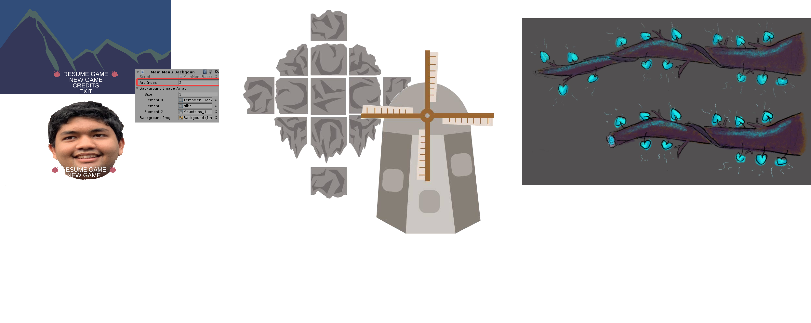
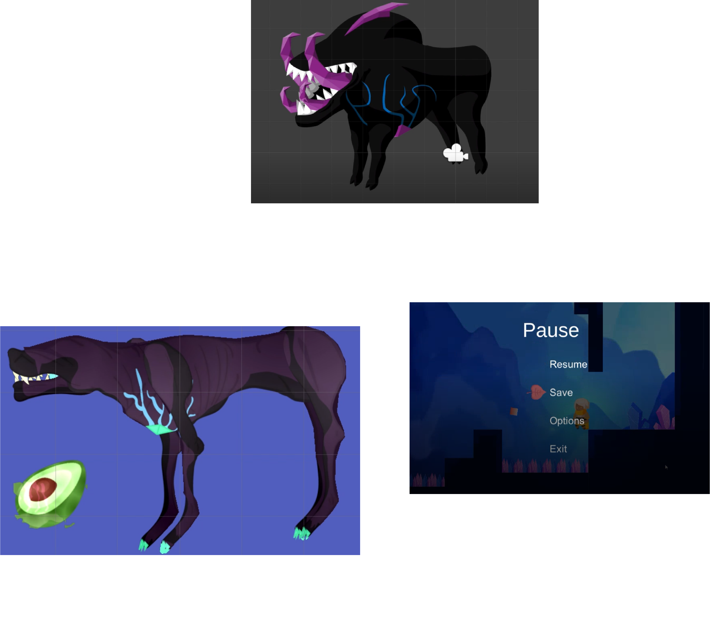
 These spotlights are essentially compilations of recently updated tasks on the Jira and updates
in the Discord server preview channels. On occasion, I've checked in with pod leads to see if
they had any specific work from their pod that they wanted to highlight. I have also spent a lot
of time meeting with other leads and officers regarding the addition of the Studio in WolverineSoft's
Constitution, which I spent hours on updating.
These spotlights are essentially compilations of recently updated tasks on the Jira and updates
in the Discord server preview channels. On occasion, I've checked in with pod leads to see if
they had any specific work from their pod that they wanted to highlight. I have also spent a lot
of time meeting with other leads and officers regarding the addition of the Studio in WolverineSoft's
Constitution, which I spent hours on updating.
Other than the aforementioned production work, I've also spent this sprint adjusting environment
art according to the feedback I receive. One small observation several playtesters have made is that
the breakable wall sprite didn't stand out enough (it wasn't apparent that the wall was breakable).
Thus, I went back through and made the cracks on the wall larger, and added several smaller,
non-transparent cracks to it. The updated sprite is pictured below, as well as how it looks in game!
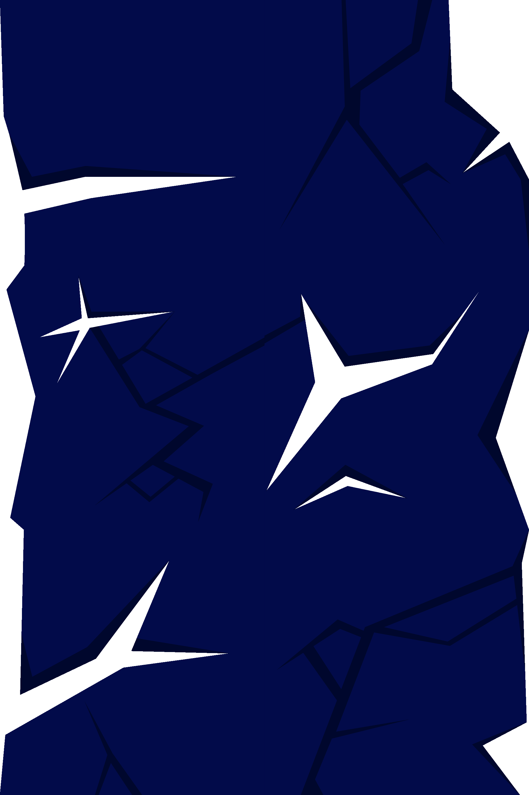
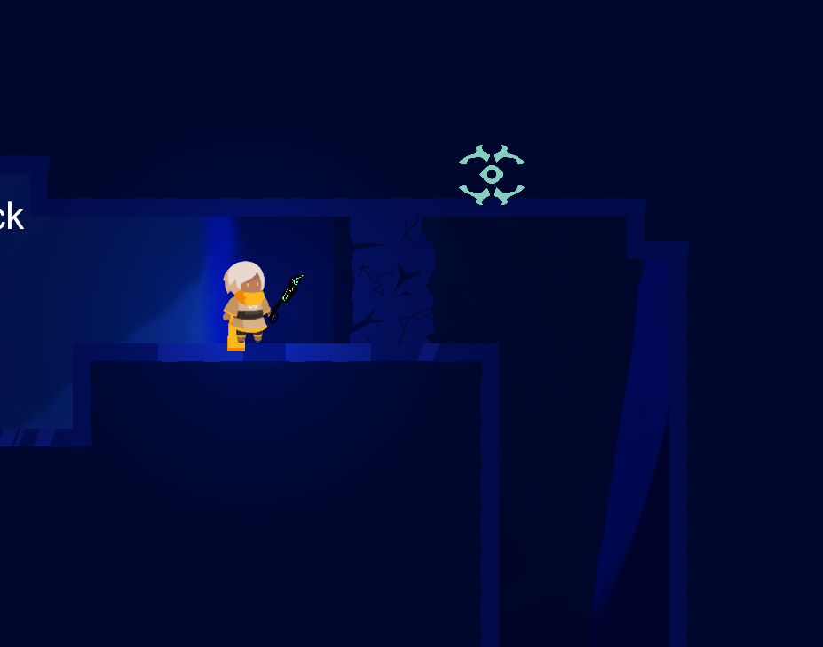
Finally, one of the most noticeable issues in the level design art was the transparent lines glitch.
Essentially, tiles laid next to each other exactly still appeared to have a thin transparent line
between them, giving the impression of a "grid" when there wasn't one. This was also an issue in
Dreamwillow, that was solved through the grueling task of exporting each tile one by one individually
(Adobe Illustrator does not have a graceful solution for this). No amount of toggling anti-aliasing
in any software, even Unity, seemed to help. Matt and I worked hard to find a solution, and we finally
fixed things by placing each sprite directly next to each other in a sprite sheet and using Unity's
"slice by cell" sprite editor feature. It took quite a while to lay these tiles next to each other
and fill in any transparencies, but the results can be seen below! After fixing these transparent lines
myself, I taught another level design artist through how to do this herself.
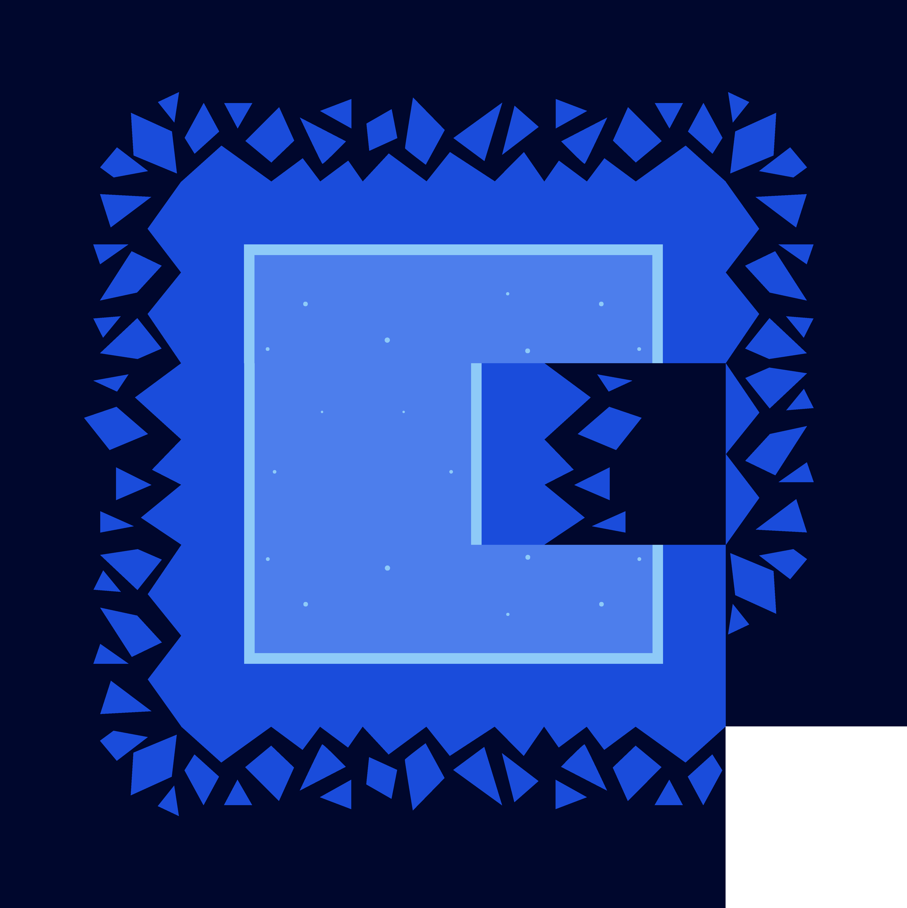
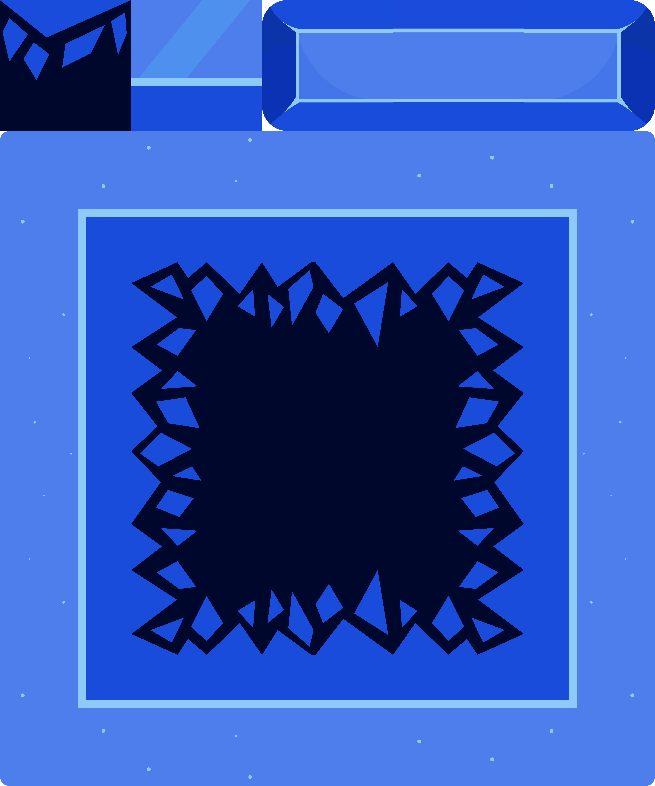
My next steps for the upcoming sprint will be to continue iterating on the Windmill Forts background
art, nail down the Crystal Caves tileset and background art, submit the Constitution, and continue
posting frequent spotlights.
Tileset Iteration and Windmill Forts
March 23rd, 2020 | Amber Renton | WolverineSoft Studio
Weekly studio check-ins & giving feedback: 6 hours
Breakable wall sprites: 2 hours
Meeting attendance: 4 hours
New Crystal Caves tile set and minor fixes: 18 hours
Windmill Forts background: 5 hours
Throughout the past three weeks, I've worked heavily on environment art as well
as on various Production tasks. I was initially upset with the quality of my
Crystal Caves tile set, as I felt it got repetitive very quickly. Levels looked
very bland, and there was little contrast (see my previous blog post for evidence).
As a result, I expanded heavily on the tile set by taking inspiration from the variety
tiles in Celeste. First, I created tiles for the "breakable wall" level obstacle and
replaced the old "spikes" tile with something more muted that looked more cohesive
with the environment.
After this, I began working on variety tiles. Pictured below is a "summary" of the old tile
set, minus any crystal decorations and alternate tiles.
What these tiles lack are what I call "inner" tiles. Here is a screenshot of a level created
with this tile set. It is difficult to see, and implementation of the tile set isn't finished
in this screenshot, but it becomes obvious that there are tiles missing.
To remedy this, I created the below 4 "inner tiles".
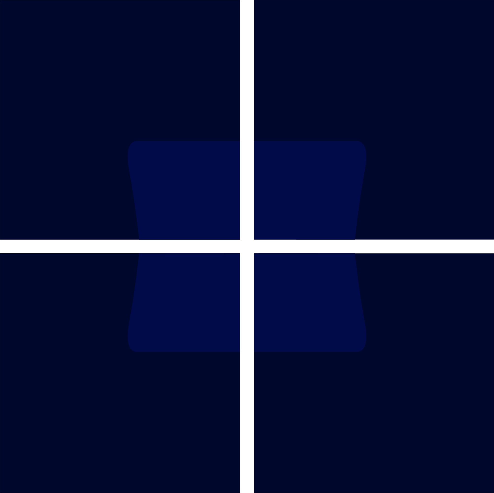
From there, I combined all these elements to create a completely new tile set with just as many
alternate tiles to serve as a "variety" tile set. Tiles from both tile sets could be combined
with one another seamlessly to create a varied and interesting level. A screen cap of the new
tile set is pictured below. The darker tiles on the left are old (asides from the breakable wall),
and the tiles on the right are completely new.
I also created an example level in Illustrator to showcase how this new tile set would look.
My final task this sprint was to create a parallax-able first iteration draft of the Windmill
Forts background. Because we are currently reworking the way parallax works for a smoother
experience (my task for the next sprint), this doesn't reflect the actual sprites that will
appear in-game. However, it is enough to get an idea of what will be done in the next two weeks.
Crystal Caves Level Design
March 1st, 2020 | Amber Renton | WolverineSoft Studio
During these past two weeks, I've been focusing on my work in the level design
team. Before jumping into getting art assets out for the Crystal Caves, There
were multiple questions we had to answer first: (1) How large was each tile with
respect to the player sprite? (2) How complex did we want tiles to be relative
to their background art? (3) What are the factors that we must consider for
parallax? We ultimately determined that, much like in Celeste, Io would be 2 tiles
tall with a collider of only 1 tile. We also determined that tiles would look simple
in order to avoid the screen from getting too chaotic, and that for now, background
images should tile for simple and rapid parallax.
As pictured, I already had a key concept in place for the appearance of
a Crystal Caves level. However, this was only a draft, and the piece wasn't cleanly
broken up into different parallax-able layers. Additionally, each "layer" of this
piece wasn't tile-able horizontally.
Thus, my next course of action was to go through this illustration file and manually
separate it into layers. After doing that, I had to go back through and tile each layer
with itself and make the necessary adjustments to make each piece horizontally tile-able
for a clean parallax. While this was fairly tedious work and took quite a while, the
results were pretty satisfying and each layer can be viewed below.
The finished product looked like this:
After finishing up with the Crystal Caves background, I then moved into the phase of
planning out its tileset. This proved to be difficult, as my original key concept art
did not show off much of a "tileset". Additionally, it was still up in the air as to
how much lighting would be done in-sprite as opposed to in-Unity with tools such as
normal maps. Before creating any final assets, I drafted a potential "block" in my
illustration software to test color palettes and general design. This would be a
potential platform tile.
After reviewing the image, I drafted vector final sprites based on this tile in Adobe
Illustrator. I took care to ensure that it tiled nicely.
Then, I created other tiles with colors featured in the keyconcept. While these are not
final, I wanted to see how these tiles looked in-game before making more detailed sprites.
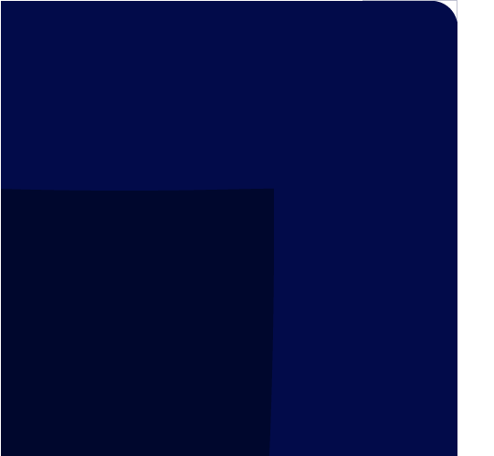
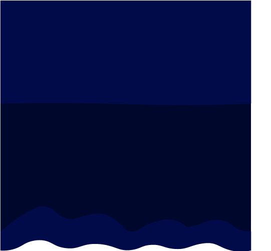
Not all are shown! There are a total of 30 sprites so far, and it's likely that even
more will be needed per level. I was also asked to create additional sprites to serve
not as platforms but as decorations, so I created some crystal sprites. I was also
asked to create "hazard" sprites, so I opted to create pointier crystals.
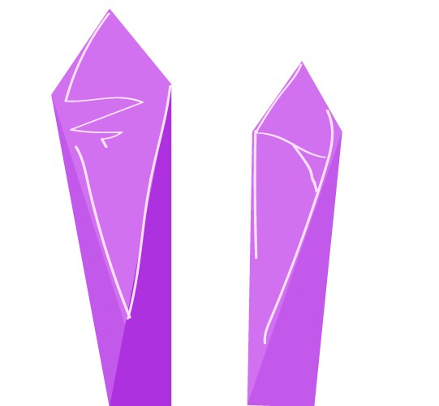
I find myself not so much a fan of the saturated colors of these sprites, however.
Even with these many tiles, the level still grows repetitive.
After helping other level design artists understand how to create smoothly tile-able
tile palettes, my next steps will be to add and refine even more tiles and foreground
adornments to the Crystal Cave level before moving on to drafting similar things for
the Windmill Forts and other planned environments. Similar to my work in Dreamwillow,
I've found Level Design art to be one of the most work-heavy teams in the project, and
I'm concerned about what this might mean for scope. I intend to use Spring Break to
put out a lot of art assets for Project Blue, however, so as of now I am not too worried.
Style Guide, Tutorials, and Key Concepts
February 17th, 2020 | Amber Renton | WolverineSoft Studio
As the past two weeks have wrapped up the pre-production and pre-alpha phases,
I've been working on wrapping up the first iteration of the studio style guide,
pushing out some tutorials, and illustrating key concept art for other art
members and teams to reference.
The questions that are asked of me most consistently are about visual theming.
Without a central theme, it's difficult to put together a cohesive looking,
sounding, and feeling game. These questions are what I attempted to answer through
the Style Guide, which is posted on Confluence under the Departments > Art folder.
Pictured above are a few of the vital snippets of the Style Guide. I also included
an introduction to sprite architecture - that is, how a sprite should be separated
into layers when created. I also discussed the gap in style between the game's
foreground and background.
Another task I tackled this week was the creation of the Studio's Unity 2D Animation
Tutorial. I actually had to try to record this twice as the first iteration was too
laggy. In the end, it became - with no exaggeration - about 16 hours of grueling work,
planning, recording, and narrating. Even still, the video is not in its ideal state.
For now, though, it has been uploaded to the Studio YouTube channel. The video can be
accessed here.
In order to evaluate the feasibility of our desired art style, as well as to identify
a key aesthetic for Project Blue, I worked with Alex Kisil's creative direction to
illustrate a "key concept" for the Crystal Caves. I also created two iterations of
concept art for Io, which I let Alex Kisil and the other leads choose from. I began
a rough draft of the Crystal Caves tile set, which should be done next week.
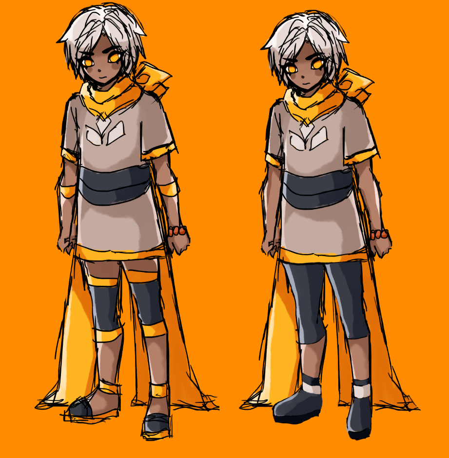